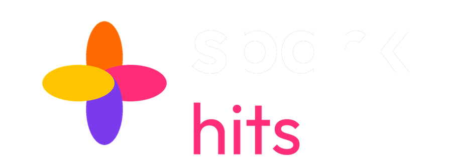

🔊 Tap for sound
Our channels
Spark Hits · Film songs, day and night, from the music labels' own channels · Channel 23 on Cable TV · Advertise with us: WhatsApp 437 602 6500 · tv.bulkbazaar.ca/advertise